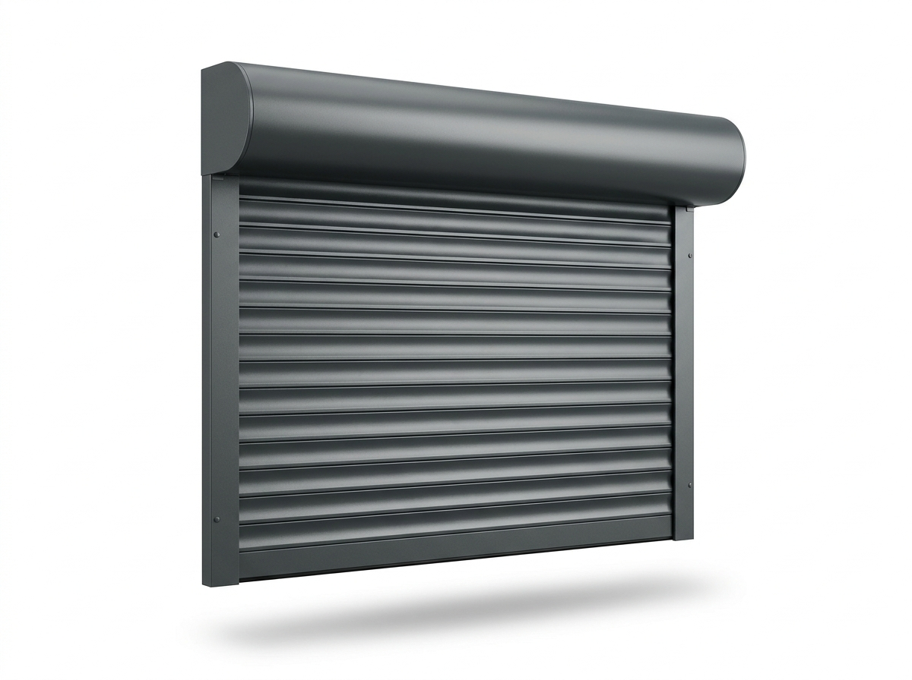
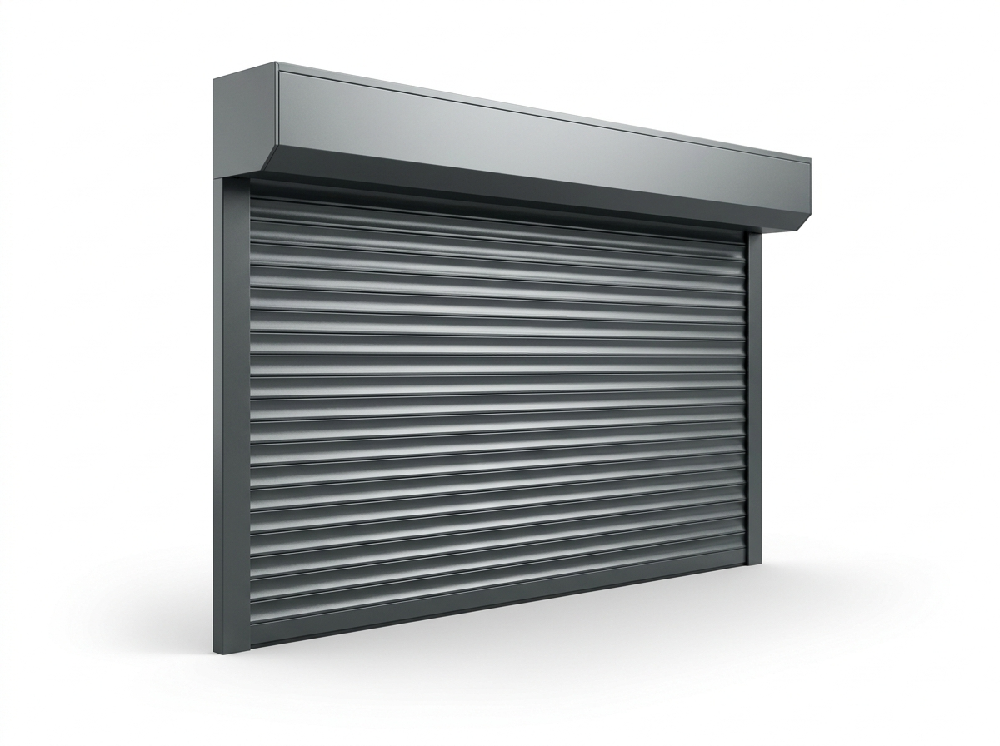
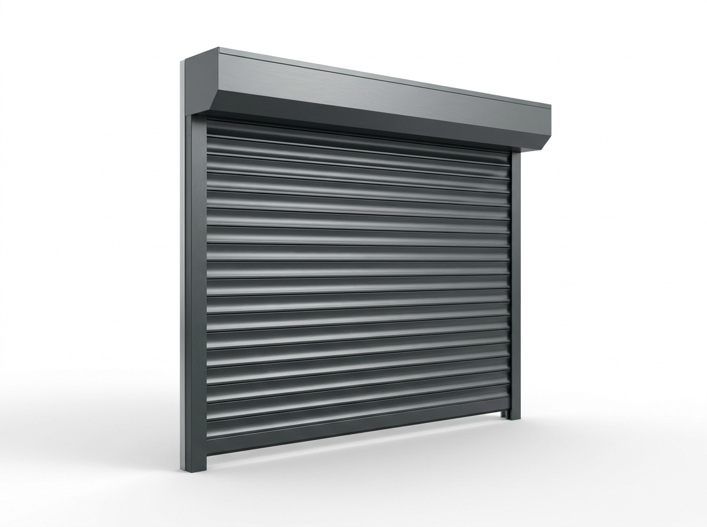
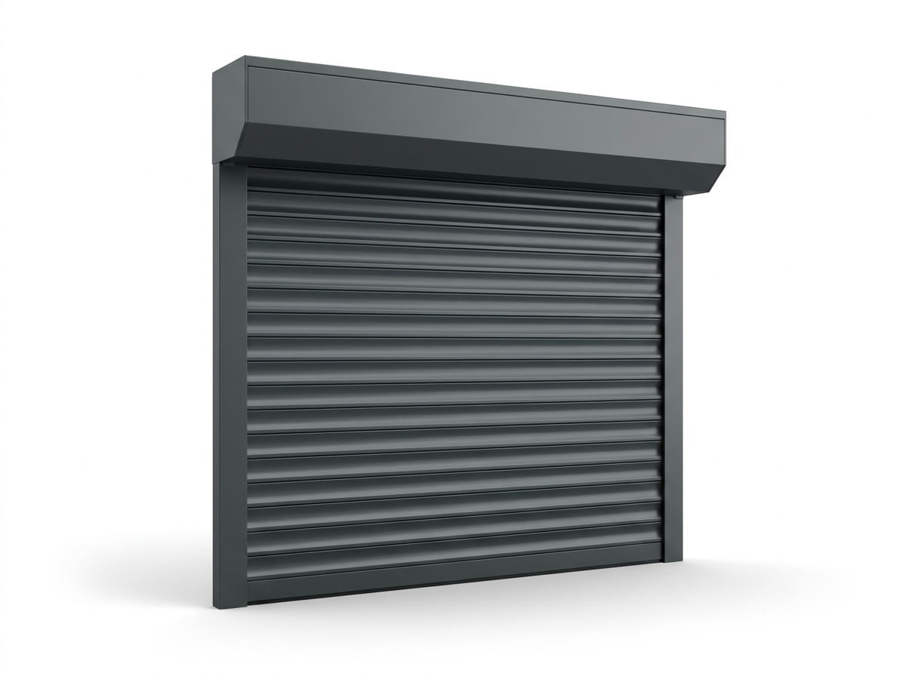
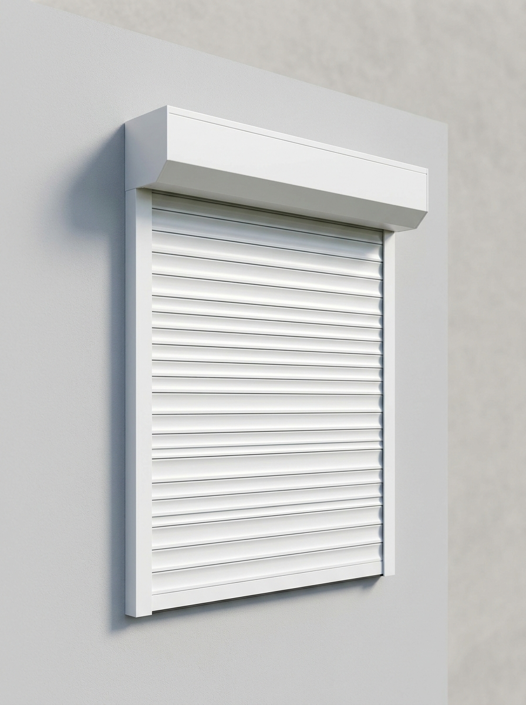
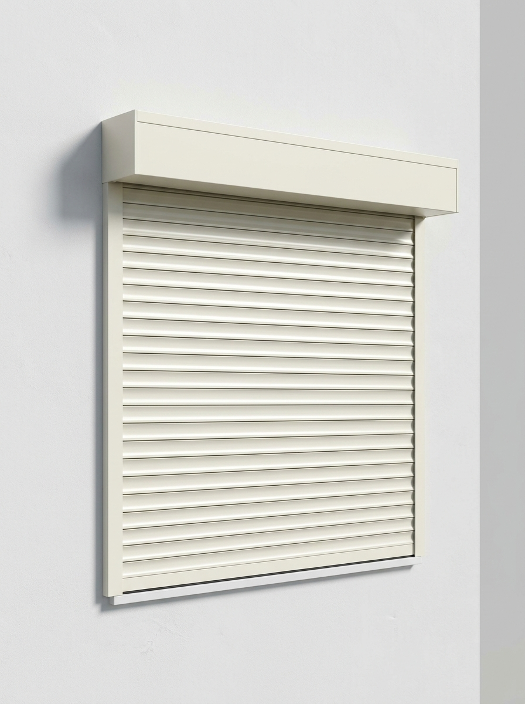
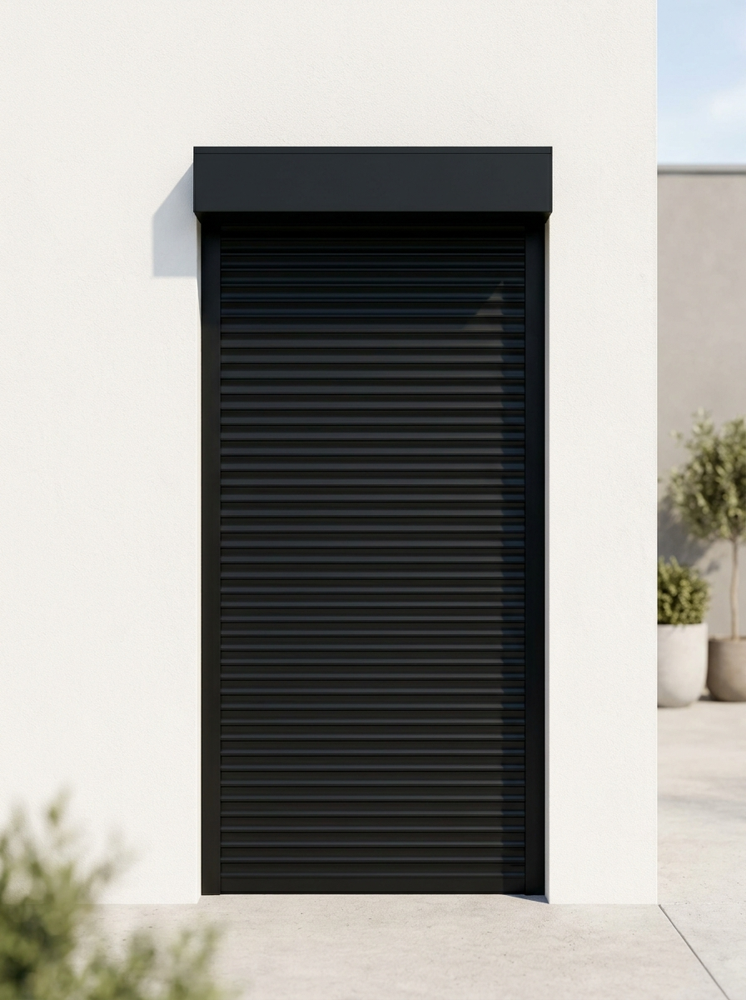
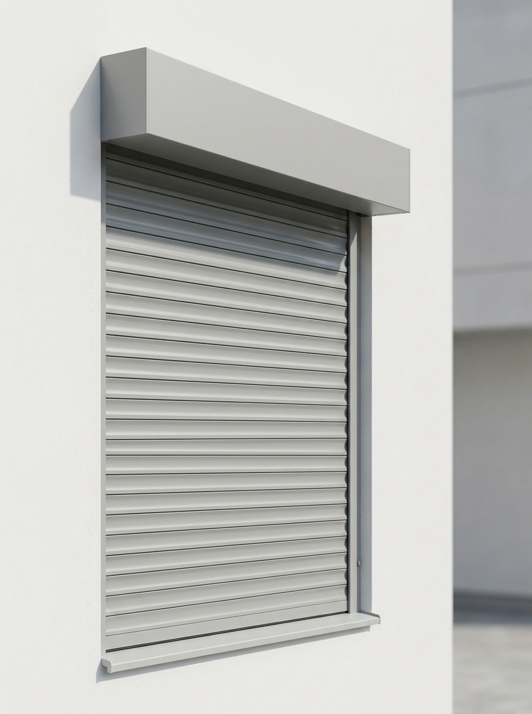
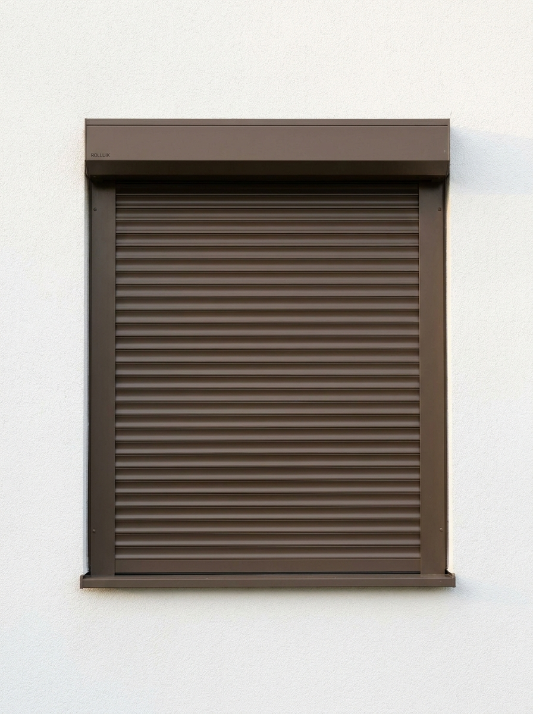

Lucky Zonwering maakt rolluiken op maat in eigen productie aan de Ussenstraat in Oss en plaatst ze met eigen monteurs in heel Noord-Brabant. Meer privacy en verduistering, betere isolatie en extra inbraakwering — vakwerk sinds 1975, gratis advies aan huis en beoordeeld met een 5,0 op Google uit 124 reviews.
Rolluiken zijn een van onze specialiteiten — en als familiebedrijf maken wij ze al sinds 1975 zelf. Onze klanten kiezen voor rolluiken om uiteenlopende redenen: een donkere slaapkamer voor de nachtdienst, minder warmte op een hete zolderkamer, meer privacy aan een drukke straat of simpelweg een geruster gevoel als ze op vakantie zijn. Eén product, veel voordelen.
Omdat wij de rolluiken in eigen huis produceren én met onze eigen monteurs plaatsen, heeft u maar één aanspreekpunt: van het gratis inmeten tot de oplevering en de service daarna. Hieronder leest u alles over rolluiken op maat — van uitvoeringen en kapvormen tot kleuren, bediening en onze werkwijze.
Van een voorzetrolluik voor bestaande bouw tot een weggewerkt inbouwrolluik — alles op maat gemaakt, met een ronde of vierkante kap en in de kleur van uw keuze.

De meest gekozen oplossing voor bestaande woningen, zonder hak- en breekwerk.
Offerte aanvragen
Strakke, rechte kastvorm die naadloos aansluit bij moderne gevels.
Offerte aanvragen
Voor licht schuine kozijnen en dakkapellen — een perfect sluitend rolluik.
Offerte aanvragen
Voor steile schuine ramen en puntgevels, op maat gemaakt voor uw situatie.
Offerte aanvragenRolluiken zijn een veelzijdige investering die zich op meerdere fronten terugbetaalt. Dit zijn de belangrijkste voordelen voor uw woning:
Een gesloten rolluik vormt een zichtbare, fysieke barrière die inbrekers ontmoedigt en het zicht naar binnen wegneemt. Veel klanten ervaren simpelweg meer rust, zeker tijdens vakanties en in de donkere wintermaanden.
De luchtlaag tussen het rolluik en het raam isoleert: in de zomer blijft de warmte buiten, in de winter de kou. Zo draagt een rolluik bij aan een lagere energierekening en meer comfort, het hele jaar door.
Een dichtgedraaid rolluik maakt de slaapkamer vrijwel volledig donker en houdt nieuwsgierige blikken buiten — ideaal aan de straatzijde of voor wie overdag slaapt na een nachtdienst.
Naast warmte en kou houdt de extra luchtlaag ook geluid van buiten tegen. Aan een drukke straat of doorgaande weg merkt u het verschil: een rustiger en stiller binnenklimaat.
Benieuwd naar de mogelijkheden en een richtprijs? Stel online uw rolluiken op maat samen of vraag direct een gratis offerte aan.
De rolluikkast leveren wij met een ronde of vierkante kap, passend bij de stijl van uw gevel. Als opbouwrolluik zit de kast zichtbaar aan de buitenzijde — ideaal voor bestaande bouw — terwijl een inbouwrolluik tijdens de (ver)bouw netjes in het metselwerk wordt weggewerkt.

Heeft u schuine ramen, een dakkapel of een puntgevel? Dan maken wij rolluiken met afschot, bijvoorbeeld onder 20° of 45°, zodat het rolluik ook bij een schuine bovenkant perfect aansluit. Alles wordt op de millimeter nauwkeurig op maat gemaakt in onze eigen werkplaats in Oss.

Onze rolluiken worden uitgevoerd in onderhoudsarm, kleurvast aluminium. Naast de vier standaardkleuren leveren wij ook grijs en bruin — passend bij elke gevel en kozijn.

Strak en modern — de populairste keuze.

Licht en klassiek, past bij lichte kozijnen.

Warm en zacht, mooi bij landelijke woningen.

Eigentijds en stoer, een markant accent.

Neutraal en tijdloos, past bij veel gevels.

Warm en natuurlijk, mooi bij houten kozijnen.
U bepaalt zelf hoe u uw rolluiken bedient. Lucky Zonwering levert alle bedieningsvormen en adviseert wat het beste bij uw woning en wensen past:
Eenvoudig en betrouwbaar te bedienen met een band of een slinger. Een onderhoudsarme oplossing zonder elektra, ideaal voor één of enkele ramen.
Met een ingebouwde motor bedient u uw rolluik via een schakelaar of afstandsbediening. Comfortabel voor grote rolluiken en voor wie meerdere ramen tegelijk wil bedienen.
Een draadloos rolluik op solar zonne-energie wordt geplaatst zonder hak- en breekwerk. Een klein zonnepaneel laadt de accu op, zodat er geen bekabeling nodig is — perfect voor bestaande bouw.
Met een motor van bijvoorbeeld Somfy bedient u uw rolluiken via een app op uw telefoon. Stel tijdschema's in of bedien alles tegelijk, ook als u niet thuis bent.
Liever even sparren over de juiste bediening? Bel ons op 0412 - 633 590 of vraag gratis advies aan huis aan.
Elk rolluik wordt in onze eigen werkplaats in Oss op de millimeter nauwkeurig gemaakt en vóór de montage met de hand getest. Geen tussenhandel, maar maatwerk uit één hand — met een korte levertijd en een scherpe prijs.

Van antraciet tot crème: onze rolluiken staan bij honderden woningen in Oss en omgeving. Onze eigen monteurs plaatsen ze netjes en veilig en laten uw woning schoon achter — een storing lossen we dankzij onze eigen voorraad snel op.

Rolluiken laten plaatsen moet vooral ontzorgen. Daarom regelen wij alles uit één hand, in vier heldere stappen:
Wij komen vrijblijvend bij u langs in Oss of elders in Brabant, bekijken uw gevel en adviseren over type, kapvorm, kleur en bediening. Daarna meten we alles nauwkeurig op.
Uw rolluiken worden in eigen productie op maat gemaakt in onderhoudsarm aluminium en vóór montage met de hand getest. Geen tussenhandel, maar maatwerk uit één hand — met een korte levertijd en een scherpe prijs.
Onze eigen, vaste monteurs plaatsen de rolluiken netjes, veilig en vakkundig en laten uw woning schoon achter. Geen onderaannemers, maar vakmensen die u kent.
Ook na de montage blijft Lucky Zonwering bereikbaar voor service en onderhoud. Dankzij onze eigen voorraad bent u bij een vraag of storing snel weer geholpen.
Naast rolluiken maakt en monteert Lucky Zonwering een compleet assortiment zonwering en buitenleven op maat. Bekijk ook onze andere producten:
Bekijk gerust onze projecten in en rond Oss of lees waarom klanten voor Lucky kiezen.
Onze werkplaats en voorraad zitten aan de Ussenstraat 26A in Oss. Doordat we lokaal produceren én monteren, zijn de lijnen kort: we meten snel in, leveren op maat en blijven bereikbaar voor service. Veel Brabantse woningen — van vooroorlogse panden tot moderne nieuwbouw — hebben wij al van rolluiken voorzien.
Naast Oss plaatsen wij dagelijks rolluiken in de omliggende dorpen en steden:
Vragen of een afspraak maken? Bel 0412 - 633 590, mail naar info@luckyzonwering.nl of kom langs aan de Ussenstraat 26A, 5341 PM Oss.
Een voorzetrolluik wordt aan de buitenzijde tegen of voor de gevel gemonteerd, met de rolluikkast zichtbaar boven het raam. Het is dé oplossing voor bestaande woningen, omdat er geen hak- en breekwerk nodig is. Lucky Zonwering maakt voorzetrolluiken op maat in eigen productie in Oss en plaatst ze met eigen monteurs in heel Noord-Brabant.
Bij een opbouwrolluik zit de rolluikkast zichtbaar aan de buitenzijde van de gevel, ideaal voor bestaande bouw. Een inbouwrolluik wordt tijdens de bouw of verbouwing weggewerkt in het metselwerk, zodat alleen de geleiders zichtbaar blijven. Lucky Zonwering adviseert u tijdens het gratis advies aan huis welke uitvoering het beste bij uw woning past.
Ja. Een gesloten rolluik vormt een stevige, zichtbare barrière die inbraak duidelijk ontmoedigt en het zicht naar binnen wegneemt. Lucky Zonwering werkt met robuuste aluminium profielen die de veiligheid van uw woning vergroten, zodat u zich ook tijdens vakanties geruster voelt.
Ja. De luchtlaag tussen het rolluik en het raam zorgt voor extra isolatie: in de zomer blijft de warmte buiten en in de winter de kou. Zo dragen rolluiken bij aan een lagere energierekening, meer comfort en demping van geluid van buiten.
Ja. Gesloten rolluiken verduisteren de kamer vrijwel volledig, ideaal voor de slaapkamer of een kinderkamer. Zo slaapt u rustig door, ook in de lichte zomermaanden of als u overdag slaapt vanwege een nachtdienst.
Zeker. Lucky Zonwering levert handmatige, elektrische én solar rolluiken op zonne-energie, zonder hak- en breekwerk. Bediening kan met een schakelaar, een afstandsbediening of via een app op uw telefoon, bijvoorbeeld met Somfy-motoren voor slimme bediening.
De rolluikkast is leverbaar met een ronde of een vierkante kap, passend bij de stijl van uw gevel. Voor schuine kozijnen of dakkapellen maakt Lucky Zonwering rolluiken met afschot, bijvoorbeeld onder 20 graden of 45 graden, zodat het rolluik ook bij een schuine bovenkant perfect aansluit.
Onze rolluiken zijn standaard leverbaar in antraciet, wit, crème en zwart, en daarnaast in grijs en bruin. De aluminium profielen zijn onderhoudsarm en kleurvast. Lucky Zonwering adviseert u welke kleur het beste past bij uw gevel, kozijnen en bestaande zonwering.
Ja, wij monteren rolluiken bij zowel bestaande woningen als nieuwbouw. Voor bestaande bouw zijn voorzetrolluiken de meest gekozen oplossing, omdat ze zonder hak- en breekwerk te plaatsen zijn. Onze monteurs bekijken bij het inmeten welke montagewijze het netst en sterkst is voor uw gevel.
Doordat Lucky Zonwering de rolluiken in eigen productie in Oss maakt, zijn de levertijden kort. Na het gratis inmeten weet u precies waar u aan toe bent; de exacte termijn bespreken we tijdens het adviesgesprek.
De prijs van rolluiken hangt af van de afmetingen, de kapvorm, het type bediening en de uitvoering. Lucky Zonwering meet gratis bij u in en geeft daarna een heldere offerte op maat, geheel vrijblijvend en zonder verplichtingen.